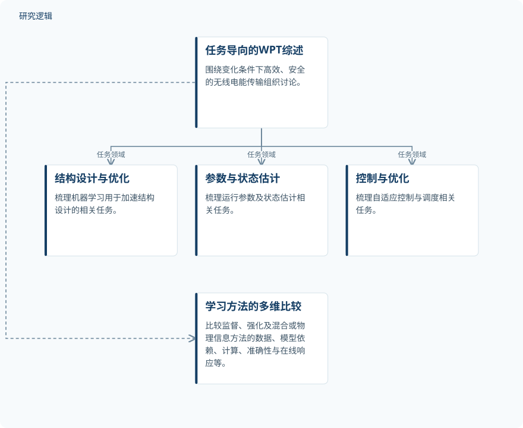

摘要解读
机器学习赋能无线电能传输：结构优化、状态与参数估计及自适应控制的任务导向综述
Machine Learning-Enabled Wireless Power Transfer: A Task-Oriented Review of Structural Optimization, State and Parameter Estimation, and Adaptive Control
解读更新 2026-10-26 23:51 · 依据公开摘要整理，未核验全文细节
无线电能传输如何在几何、耦合、负载与对准状态变化时，仍保持高效、安全？这篇综述从任务而非算法名称出发，梳理机器学习在结构设计、状态估计和自适应控制中的作用，帮助读者理解方法选择背后的条件与工程边界。
文章目录
无线供能的难点，是变化中的效率与安全
无线电能传输（WPT）系统需要面对几何、耦合、负载、对准及运行条件的变化。机器学习被用于加速结构设计、估计运行参数和状态，以及支持自适应控制与调度；这些应用共同指向变化条件下的能量传输问题。
按任务组织，再比较学习方法的适用条件
这是一篇综述，而非摘要中报告单项装置实验的研究。作者建立任务导向框架，将讨论组织为相互关联的结构设计与优化、参数与状态估计、控制与优化领域。
在这一框架下，作者比较监督学习、强化学习以及混合或物理信息方法。比较维度不仅包括准确性，还涉及数据需求、对物理模型的依赖、信息来源、计算需求、在线响应、应用范围和优化目标。
依据摘要整理的任务框架与比较维度


展示综述的任务组织与方法比较关系，不代表实验流程、控制闭环或论文原图。
下载 SVG图示关系说明
实线表示相邻阶段的信息流，虚线表示跨阶段联系或反馈。
任务导向的WPT综述 → 结构设计与优化：任务领域；任务导向的WPT综述 → 参数与状态估计：任务领域；任务导向的WPT综述 → 控制与优化：任务领域；任务导向的WPT综述 → 学习方法的多维比较：方法比较
学习方法各有前提，部署瓶颈不止准确率
摘要将监督学习的快速代理建模、回归与分类能力，明确建立在具备代表性标注数据的前提上。强化学习面向序贯控制与调度，但伴随奖励设计、安全探索和仿真到现实迁移的挑战。混合方法则将物理知识融入数据驱动模型，以改善数据效率与物理一致性。
作者归纳的工程部署障碍包括：数据有限且存在偏差、分布外泛化较弱、物理一致性不足、在线自适应不安全、嵌入式资源受限，以及缺少标准化基准。摘要没有给出某类方法全面优于其他方法的定量结论。
摘要尚不能交代综述覆盖与验证强度
仅凭摘要，无法判断文献检索与筛选方式、纳入研究的数量、数据样本规模，以及不同方法是否在可比条件下接受评估。对具体装置、工况和硬件验证范围，也不能作出结论。这些是当前资料无法核实的信息，不代表论文没有讨论或开展相关比较。
摘要将不确定性感知与物理信息学习、安全仿真到现实迁移、轻量化边缘部署、分布式协调、可复现评估和数字孪生辅助开发列为未来重点；这些方向不能被表述为本文已经验证的工程效果。
阅读启发：追问数据代表性与在线使用边界
阅读启发：面向结构优化，可进一步关注代理模型的数据是否覆盖目标设计条件，以及物理知识如何参与建模；面向智能运维，可关注状态估计在工况变化时的可靠性，以及在线适应的安全约束。这些问题源于摘要列出的适用前提与部署障碍，不意味着本文已验证故障诊断或预测维护能力。
以上为本站阅读启发与建议，不是论文已验证的结论。